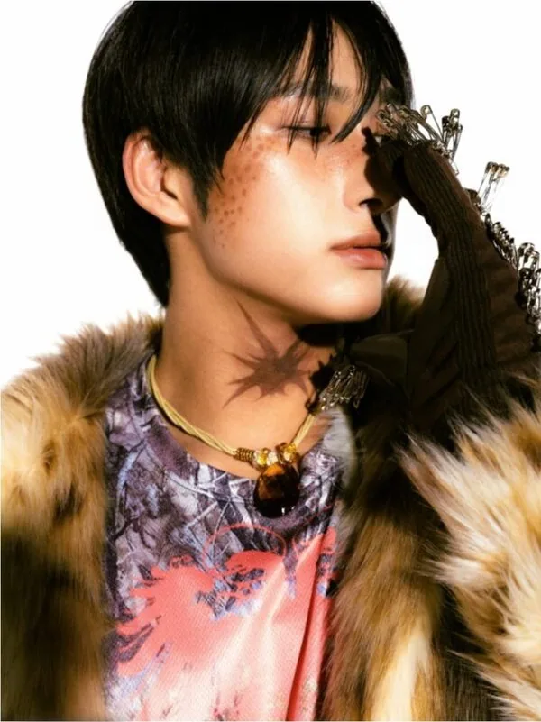
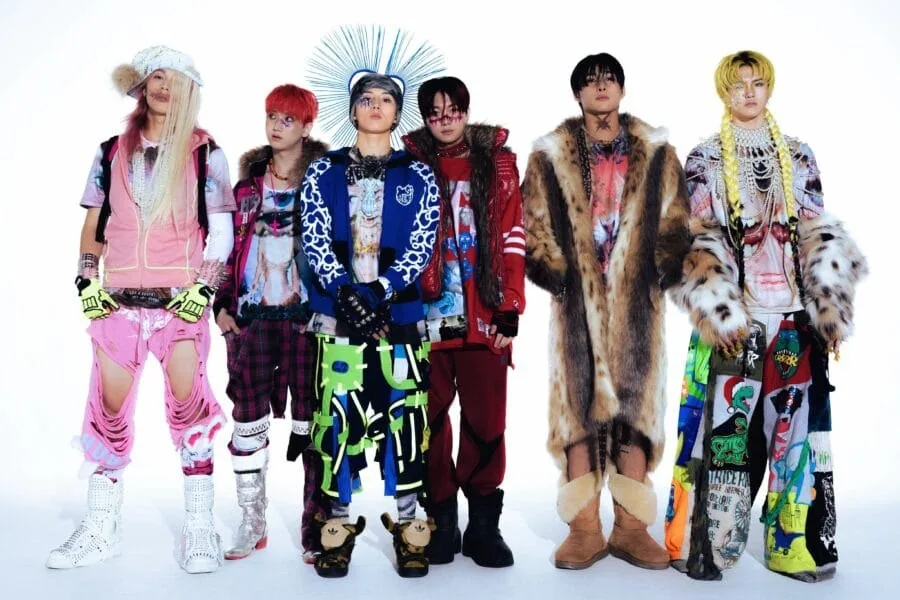
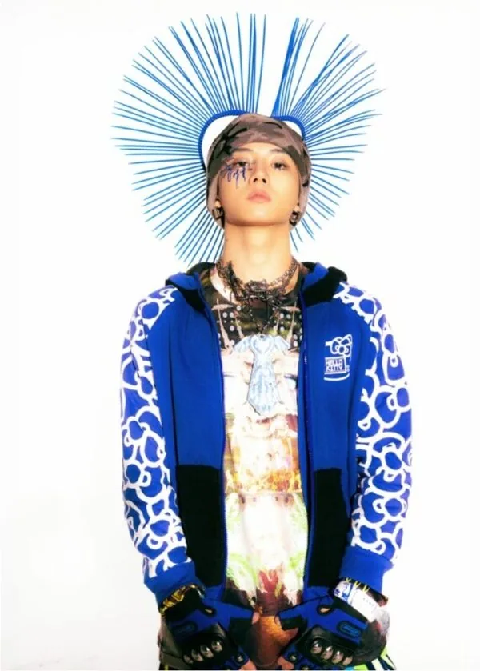
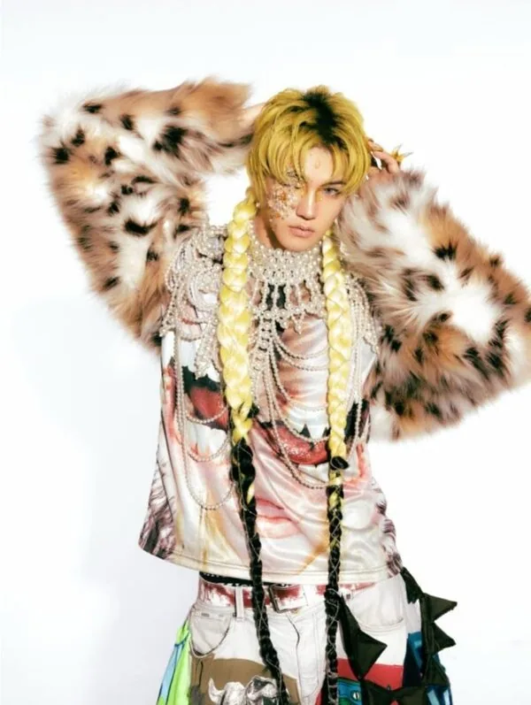
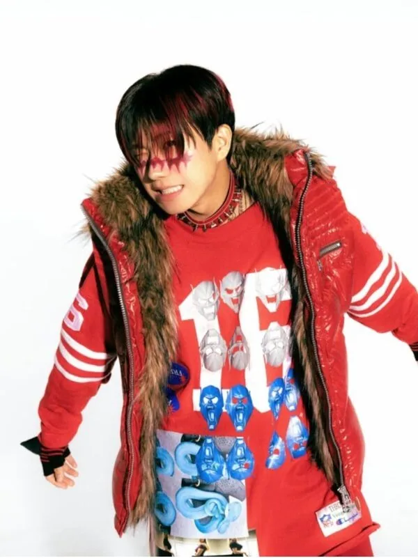
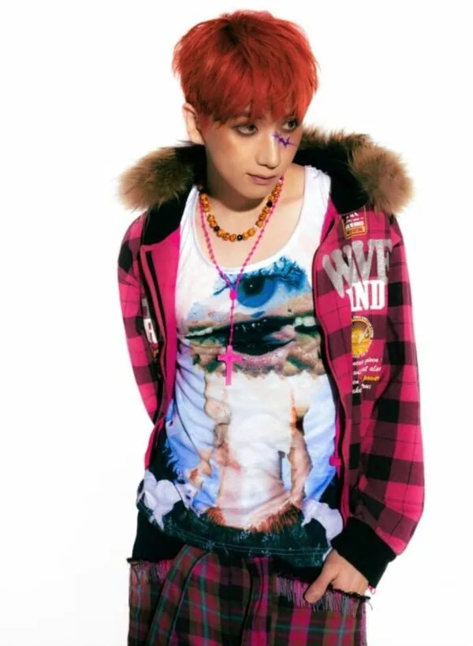
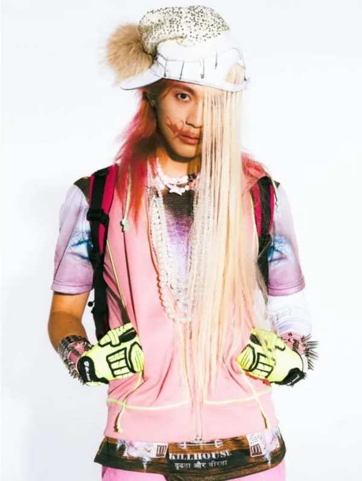

Lim Jimin
Lim Jimin (임지민) · Leader · Coréenne

K-POP
Découvre JUSTB et les profils de ses membres sur IBASE Asian Pop.
Ouvrir la fiche interactiveHistoire : JUSTB (저스트비), aussi écrit JUST B, est un boy group de 6 membres de Bluedot Entertainment (anciennement Fave Boys, Play M Boys puis Bluedot Boys) : Lim Jimin (leader), Geonu, Bain, Siwoo, DY et Sangwoo (maknae). Les membres sont passés par des émissions de survie : Under Nineteen (novembre 2018) et I-LAND (juin 2020). Le groupe a débuté le 30 juin 2021 avec le mini-album « Just Burn », et a sorti en 2025 l'EP « JUST ODD » (titre « CHEST »), suivi de la tournée JUST ODD. Les membres forment aussi, avec ATBO, le groupe The CrewOne. Salutation officielle : « Ready. BURN! Hello, we are JUST B! ». Fandom : ONLY B. Sens du nom et couleur officielle : non communiqués. Source des infos : KProfiles.
Débuts : 30 juin 2021 (premier mini-album « Just Burn »)
Agence : Bluedot Entertainment

Lim Jimin (임지민) · Leader · Coréenne

Geonu (건우) · Membre · Coréenne

Bain (배인) · Membre · Coréenne

Siwoo (시우), anciennement JM (제이엠) · Membre · Coréenne

DY (디와이) · Membre · Coréenne

Sangwoo (상우) · Maknae · Coréenne